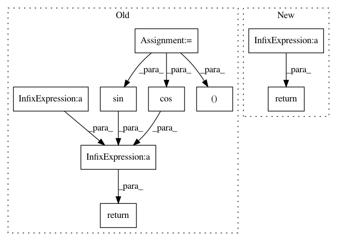

2eb36c18bd4fc8db52b93cff763e67364109117f,homeassistant/util/location.py,,distance,#Any#Any#Any#Any#,35
Before Change
in decimal degrees on the earth using the Haversine algorithm.
// convert decimal degrees to radians
lon1, lat1, lon2, lat2 = (radians(val) for val in (lon1, lat1, lon2, lat2))
dlon = lon2 - lon1
dlat = lat2 - lat1
angle = sin(dlat/2)**2 + cos(lat1) * cos(lat2) * sin(dlon/2)**2
// Radius of earth in meters.
radius = 6371000
return 2 * radius * asin(sqrt(angle))
After Change
def distance(lon1, lat1, lon2, lat2):
Calculate the distance in meters between two points.
return vincenty((lon1, lat1), (lon2, lat2)) * 1000
In pattern: SUPERPATTERN
Frequency: 3
Non-data size: 9
Instances
Project Name: home-assistant/home-assistant
Commit Name: 2eb36c18bd4fc8db52b93cff763e67364109117f
Time: 2015-09-29
Author: paulus@paulusschoutsen.nl
File Name: homeassistant/util/location.py
Class Name:
Method Name: distance
Project Name: scikit-image/scikit-image
Commit Name: f966ef79ae7c47b93029e065b3ee6686bab5bff7
Time: 2017-03-29
Author: jirka.borovec@seznam.cz
File Name: skimage/measure/fit.py
Class Name: LineModel
Method Name: predict_x
Project Name: scikit-image/scikit-image
Commit Name: f966ef79ae7c47b93029e065b3ee6686bab5bff7
Time: 2017-03-29
Author: jirka.borovec@seznam.cz
File Name: skimage/measure/fit.py
Class Name: LineModel
Method Name: predict_y